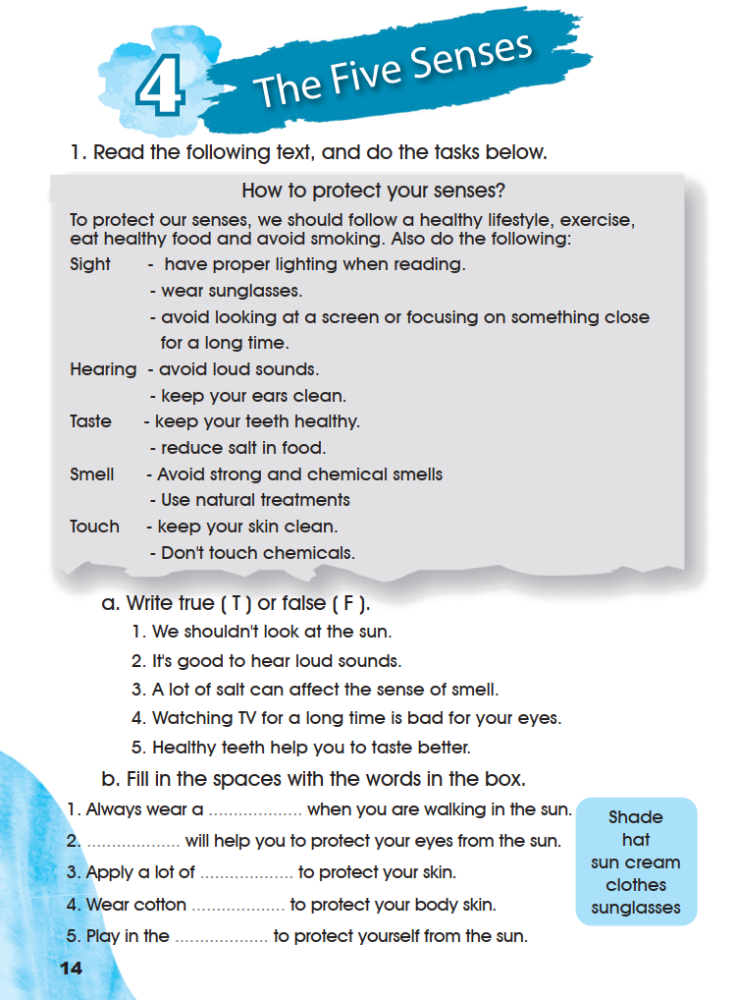
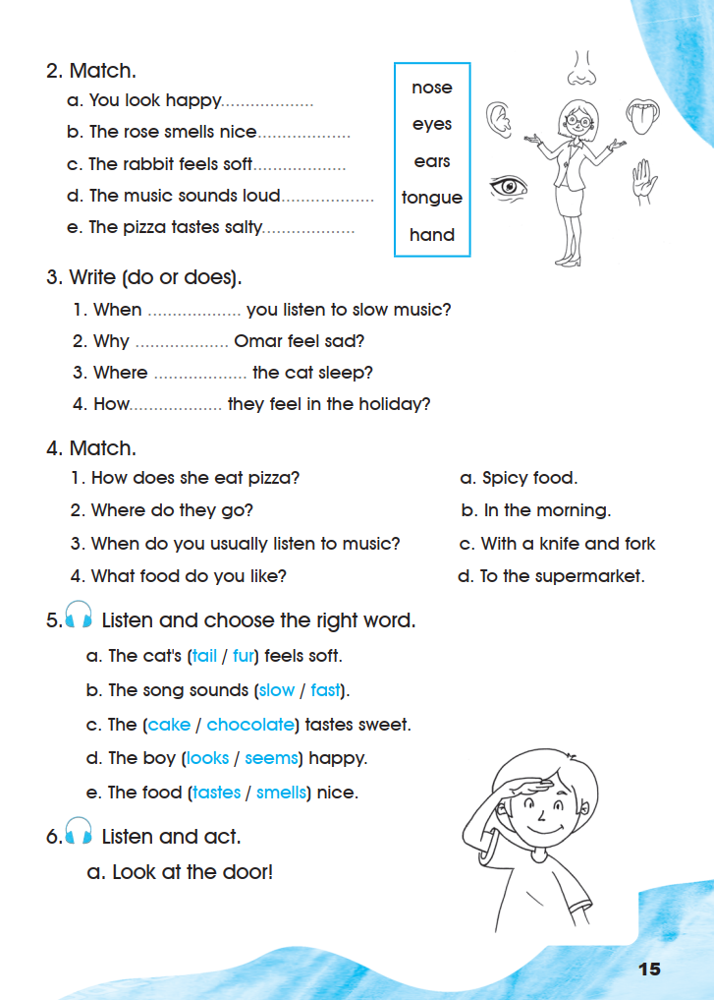
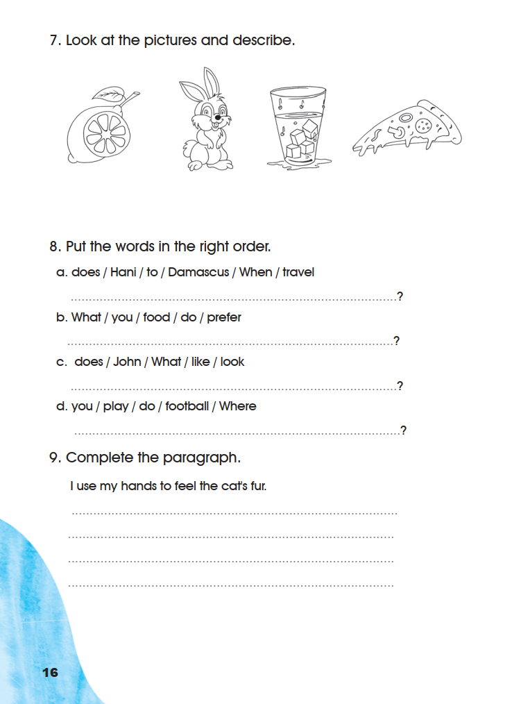

Workbook — The Five Senses
Exercises 1–9 appear in their original order across the three supplied Workbook pages. Listening exercises keep every printed word and picture but claim no answer, because the recordings were not supplied.
1. Read the following text, and do the tasks below.
How to protect your senses?
To protect our senses, we should follow a healthy lifestyle, exercise, eat healthy food and avoid smoking. Also do the following:
Sight – have proper lighting when reading.
– wear sunglasses.
– avoid looking at a screen or focusing on something close for a long time.
Hearing – avoid loud sounds.
– keep your ears clean.
Taste – keep your teeth healthy.
– reduce salt in food.
Smell – Avoid strong and chemical smells
– Use natural treatments
Touch – keep your skin clean.
– Don’t touch chemicals.
a. Write true (T) or false (F).
- 1
We shouldn’t look at the sun.
- 2
It’s good to hear loud sounds.
- 3
A lot of salt can affect the sense of smell.
- 4
Watching TV for a long time is bad for your eyes.
- 5
Healthy teeth help you to taste better.
0 of 5 answered.
b. Fill in the spaces with the words in the box.
- shade
- hat
- sun cream
- clothes
- sunglasses
- 1
Always wear a when you are walking in the sun.
- 2
will help you to protect your eyes from the sun.
- 3
Apply a lot of to protect your skin.
- 4
Wear cotton to protect your body skin.
- 5
Play in the to protect yourself from the sun.
0 of 5 filled.
a. True or false
- We shouldn’t look at the sun. — True. The Sight advice includes wearing sunglasses and avoiding strain on the eyes; sunglasses are worn in the sun.
- It’s good to hear loud sounds. — False. The text says “Hearing – avoid loud sounds.”
- A lot of salt can affect the sense of smell. — False as printed. The text puts “reduce salt in food” under Taste, not Smell, so the printed text does not support this sentence about smell.
- Watching TV for a long time is bad for your eyes. — True. The text says to avoid looking at a screen for a long time.
- Healthy teeth help you to taste better. — True. The Taste advice begins “keep your teeth healthy.”
b. Fill in the spaces
- Always wear a hat when you are walking in the sun.
- Sunglasses will help you to protect your eyes from the sun.
- Apply a lot of sun cream to protect your skin.
- Wear cotton clothes to protect your body skin.
- Play in the shade to protect yourself from the sun.
The book prints no key for exercise 1. The matching in b follows the five words the box supplies; item 3 of a is reported exactly as the printed text arranges it rather than being silently corrected.
Open the source page · Workbook · p. 14
This is the original supplied image, shown without redrawing or generation.

2. Match.
Match each printed sentence with the body part it needs.
The five words in the printed box are nose, eyes, ears, tongue and hand. They are kept in that printed order in every menu.
a. eyes (we look with our eyes) · b. nose (we smell with our nose) · c. hand (we touch with our hand) · d. ears (we hear with our ears) · e. tongue (we taste with our tongue).
3. Write (do or does).
- 1
When you listen to slow music?
- 2
Why Omar feel sad?
- 3
Where the cat sleep?
- 4
How they feel in the holiday?
0 of 4 filled.
Item 4 prints “How” and the dotted gap with no space between them; the printed layout is reproduced as the page shows it.
1. When do you listen to slow music? — subject “you” · 2. Why does Omar feel sad? — “Omar” is he · 3. Where does the cat sleep? — “the cat” is it · 4. How do they feel in the holiday? — subject “they”.
Open the source page · Workbook · p. 15
This is the original supplied image, shown without redrawing or generation.

4. Match.
1 c (a question with How asks how she does it) · 2 d (Where asks about a place) · 3 b (When asks about a time) · 4 a (What food asks about food).
5. Listen and choose the right word.
- a
The cat’s feels soft.
- b
The song sounds .
- c
The tastes sweet.
- d
The boy happy.
- e
The food nice.
0 of 5 chosen.
No printed answer. The word to choose depends on the recording, which was not supplied. Both printed options of each pair are shown in the order the page prints them.
6. Listen and act.
a. Look at the door!
Open the source page · Workbook · p. 15
This is the original supplied image, shown without redrawing or generation.
7. Look at the pictures and describe.
Model descriptions: 1. The lemon tastes sour. 2. The rabbit feels soft. 3. The water feels cold. 4. The pizza tastes delicious.
These are personal descriptions of the printed pictures, so other correct sense sentences are accepted.
8. Put the words in the right order.
The page prints a question mark at the end of each dotted line. Item a prints travel, not travels; the word is kept exactly as printed.
- When does Hani travel to Damascus?
- What food do you prefer?
- What does John look like?
- Where do you play football?
Item a keeps the printed verb travel. After does the plain verb is used, so the printed word is also the grammatically correct one.
9. Complete the paragraph.
I use my hands to feel the cat’s fur.
I use my hands to feel the cat’s fur. I use my eyes to see the stars. I use my ears to hear music. I use my nose to smell flowers. I use my tongue to taste food.
The first sentence is printed on the page. The remaining lines are personal writing, so any correct sense sentence is accepted.
Open the source page · Workbook · p. 16
This is the original supplied image, shown without redrawing or generation.
